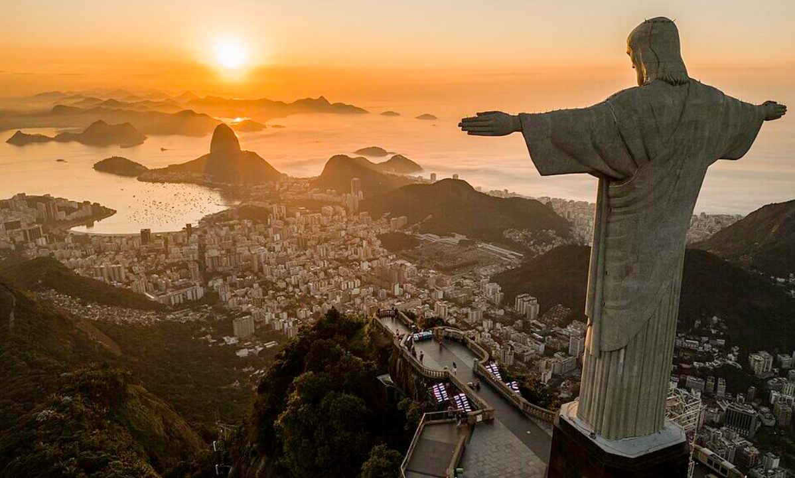
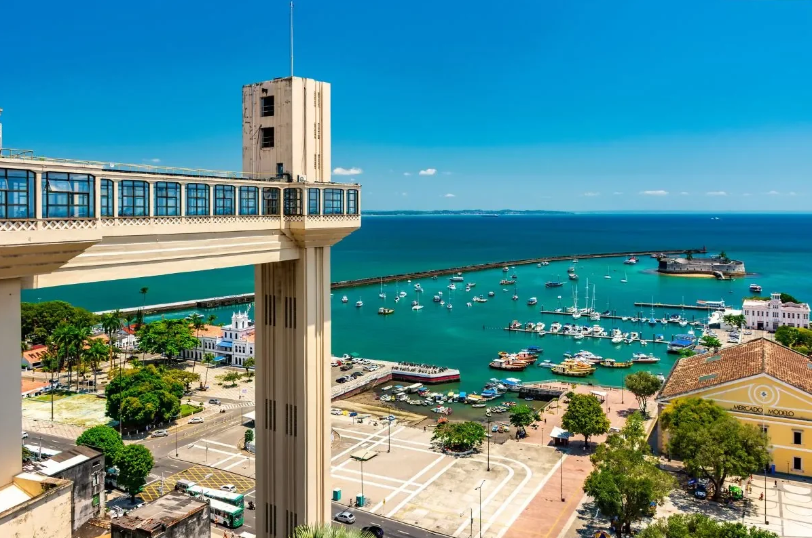
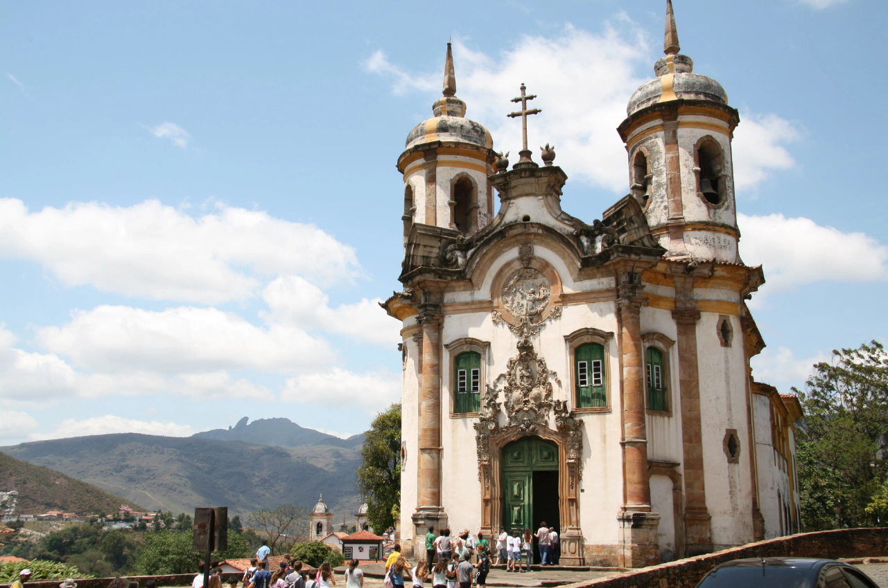
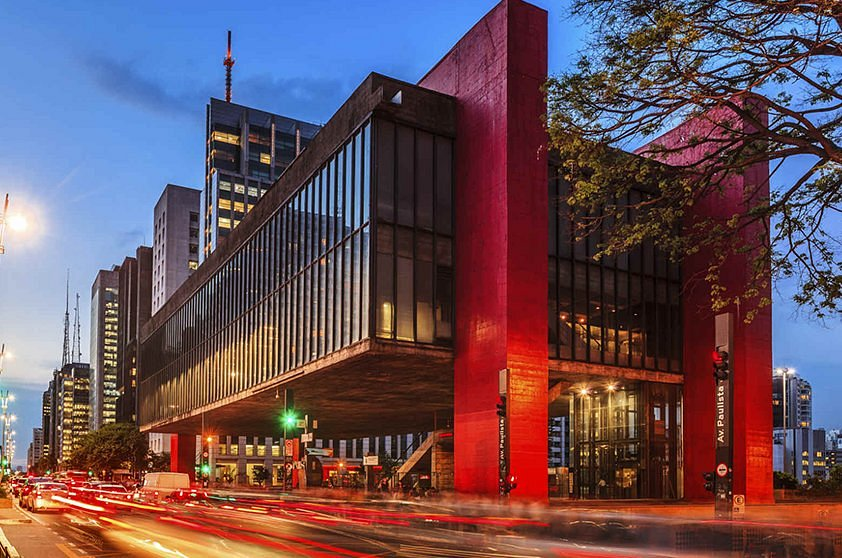
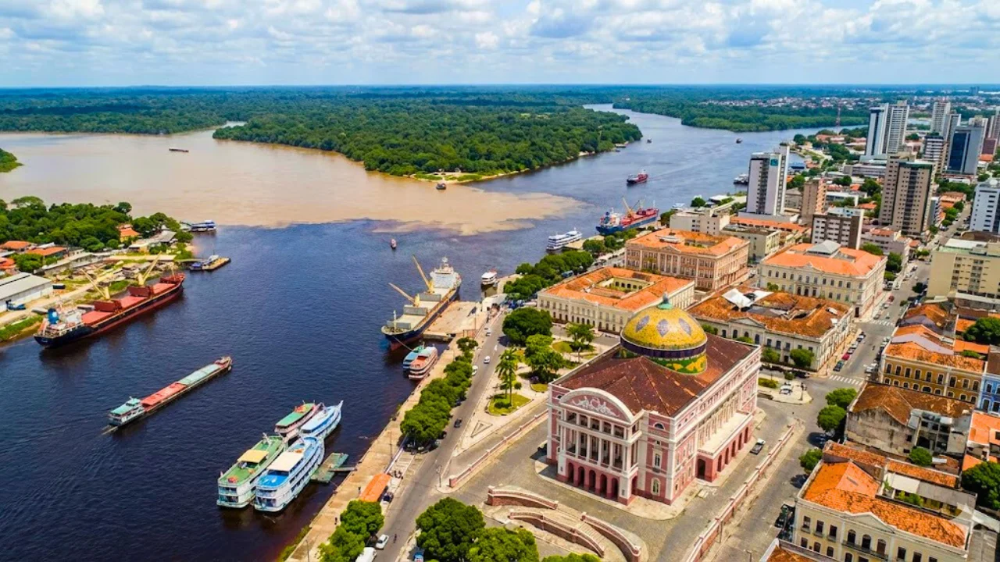
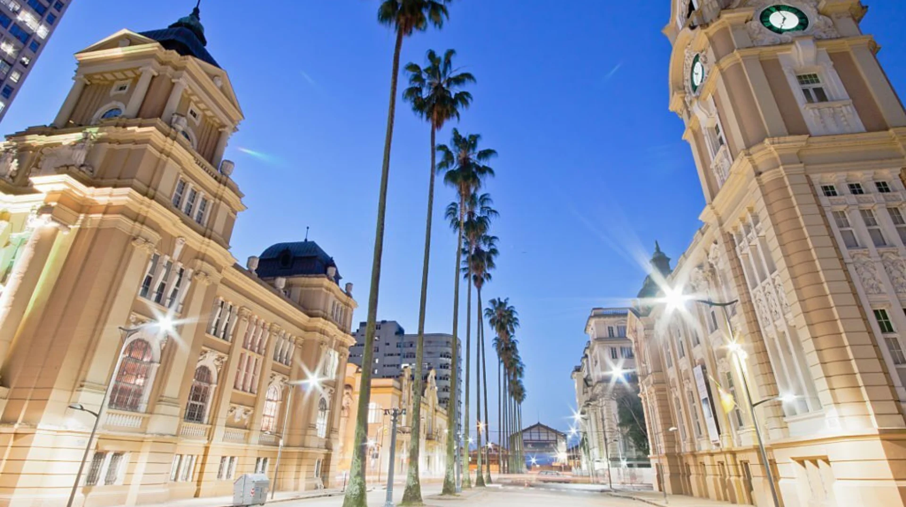

Nossos Destinos
Conheça alguns dos destinos mais bonitos do Brasil. De praias paradisíacas a florestas tropicais, o país oferece opções para todos os gostos.

Rio de Janeiro
A Cidade Maravilhosa encanta com suas praias, o Cristo Redentor e o Pão de Açúcar. Um destino imperdível para qualquer turista.

Salvador
Capital da Bahia, Salvador é famosa pelo Pelourinho, suas festas populares e a rica cultura afro-brasileira.

Minas Gerais
A paróquia é central na vida religiosa, com missas frequentadas e interior considerado muito bonito. A Diocese de Ourinhos, que abrange a região, celebra o padroeiro.

Museu em São Paulo
O MASP (Museu de Arte de São Paulo Assis Chateaubriand) é um dos museus mais importantes do Hemisfério Sul, localizado em São Paulo. Destaca-se por seu acervo de mais de 10.000 peças de arte europeia, africana, asiática e das Américas.

Amazonas (Manaus)
A porta de entrada para a maior floresta tropical do mundo oferece uma imersão profunda na cultura indígena e belezas naturais únicas, como o Encontro das Águas e o imponente Teatro Amazonas

Rio Grande do Sul
Conhecido pela forte tradição gaúcha e influências europeias, o estado encanta pelas paisagens dos Pampas e o charme das cidades da Serra Gaúcha, como Gramado e Canela.